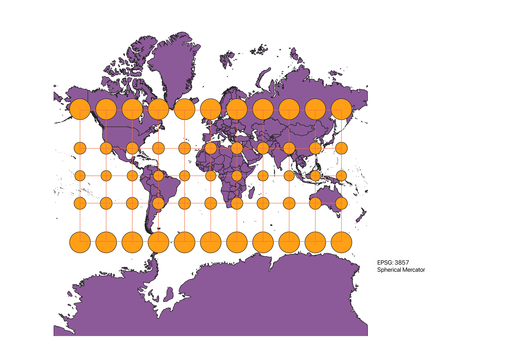
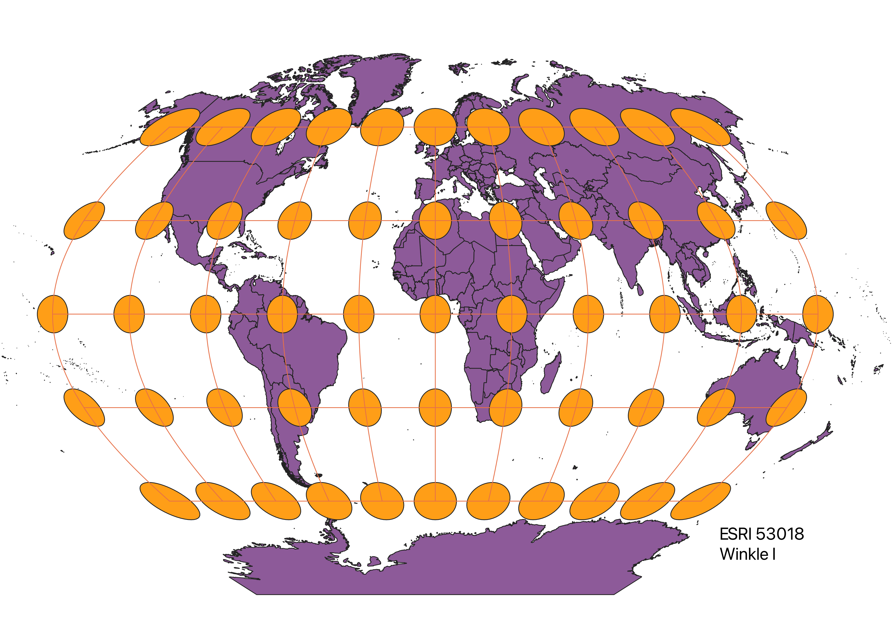
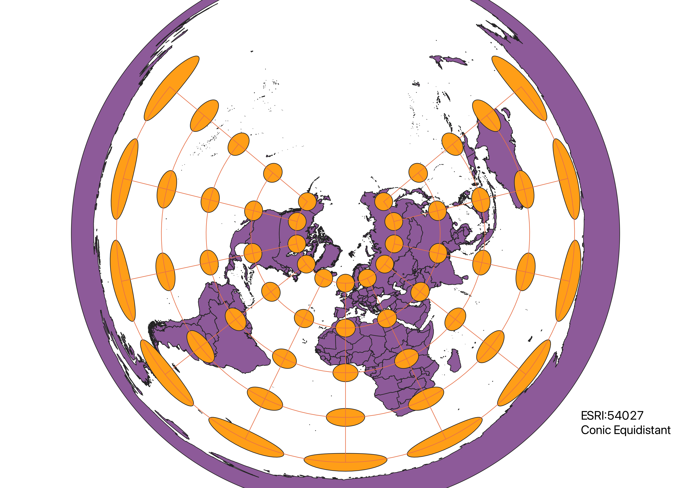
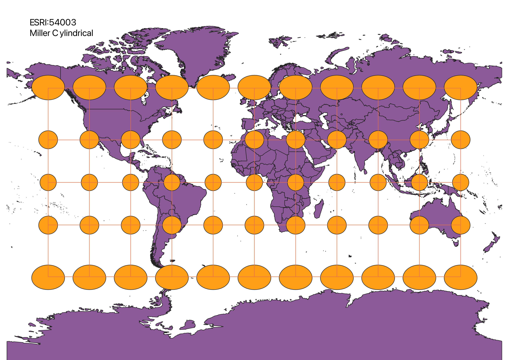
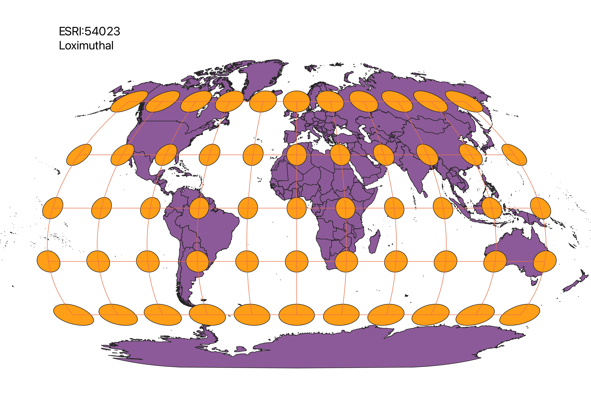

Describe in your own words how you displayed the map in different projections using QGIS
A globe can never have the same accuracy as a flat map. Therefore, in order to create our best representations of the globe when making virtual models, we must consider the region in which is being mapped and what projection is the most accurate to describe that region. The following maps show their regions of best fit and areas of high distortion. By looking at the orange circle and the red line grid, issues of area, or shape can be decided on.
Spherical Mercator
Observations - Best at the equator but expands size significantly at the poles (Greenland is way smaller than Africa)

Winkle I
Observations - Changes shape and some size as it goes away from equator to poles.

Conic Equidistant
Observations - Changes significantly in size and shapes as it gets further from the North pole towards South pole.

Cylindrical Equal Area
Observations - Equator has the most well fitted data but shapes changes significantly as you approach poles.

North Pole Azimuthal Equidistant
Observations - Changes significantly in size and shapes as it gets further from the North pole towards South pole.

Miller Cylindrical
Observations - Very uniform circles at equator and above/below until it gets to the extreme ends of the North and South pole where size and shape is distorted.

Loximuthal
Observations - Both North and South pole are distored in shape and size, however the South is more distorted in larger size.
